Embedded Control System for a SCARA Robot with Teleoperation & Vision
Final-Year Project (BSc EE) PIEAS Sep 2023 – Jun 2024
We designed and built the complete embedded control system for a custom, modified SCARA robot and connected it to an intelligence-augmented virtual environment for teleoperation. A master STM32 receives joint targets from a PC teleoperation station. It sends them over Modbus RS-485 to one slave STM32 per joint, and each slave closes a PID position loop using optical-encoder feedback. In parallel, a CoppeliaSim digital twin uses OpenCV to detect objects, plans the pick-and-place trajectory with our kinematic model, and streams the resulting joint angles to the real robot. The physical arm then repeats the motion planned in simulation.
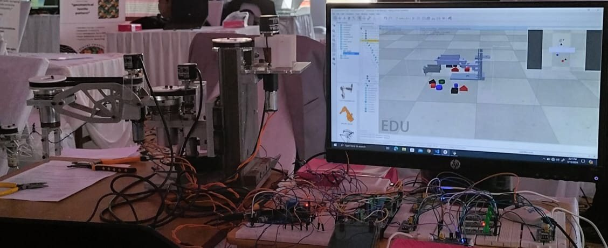
1) Objectives
- Build an embedded control system that lets the SCARA robot pick and place ICs accurately on a planar surface.
- Create a virtual environment where the robot's trajectory can be programmed and simulated.
- Connect the virtual environment to the embedded controllers to enable teleoperated control.
Context: Phase I of the project designed and fabricated the mechanical structure. Phase II, this thesis, added everything that makes it move: motors, encoders, limit switches, the suction tool and its roll mechanism, all the electronics and firmware, the kinematic model, the simulation, the vision pipeline and teleoperation.
2) System Architecture
The PC teleoperation station sends a control word to the master controller over a serial (COM) port. The master converts Cartesian targets into joint angles and then into encoder counts. It builds one buffer per joint and sends each buffer to its slave over the Modbus network. Each slave drives its motor until it reaches the target counts, then raises a completion flag that goes back to the master as a status word.
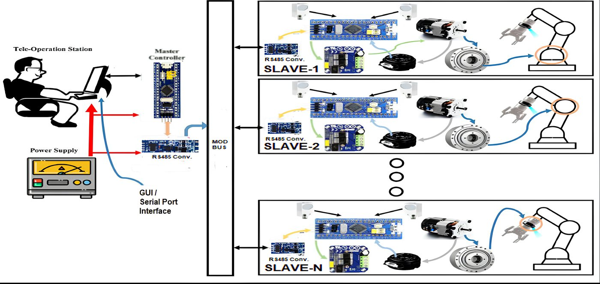
| Component | Choice | Role |
|---|---|---|
| Controllers | STM32F103C8T6 (Blue Pill), Cortex-M3 @ 72 MHz | 1 master + 4 slaves (3 joints + tool tip) |
| Fieldbus | Modbus RTU over RS-485 (MAX485), 115200 baud | Addressed master–slave messaging with CRC |
| Actuators | Maxon 12 V brushed DC, 86:1 gearhead | Joint drive through timing belts and pulleys |
| Drivers | IBT-2 (BTS7960) H-bridge | Bidirectional PWM drive |
| Feedback | OMRON E6H-CWZ6C, 1000 PPR incremental encoders | Read in STM32 timer encoder mode |
| Safety | Linear Hall-effect sensors (revolute joints), roller limit switches (prismatic joint) | End-of-travel detection |
| End effector | 12 V vacuum suction pump (relay) + orientation motor | Grip, rotate and release ICs |
3) Kinematic Modeling
The robot uses a PRR configuration, plus a tool-roll joint. Unlike a standard SCARA, the first revolute joint is offset from the prismatic axis. We assigned frames with a link-coordinate diagram and derived the Denavit–Hartenberg parameters, the individual link transforms and the full arm matrix T04.
From the tool-configuration vector we derived a closed-form inverse kinematics solution: q1 from the Z height, q3 from the law of cosines, q2 by solving the coupled equations symbolically in MATLAB, and q4 from the tool roll. Pick-and-place motions follow five via-points: lift-off → pick-up → lift-off → drop-off → set-down.
| Axis | θ | d (mm) | a (mm) | α |
|---|---|---|---|---|
| 1 | 0 | q1 | 145.4 | π |
| 2 | q2 | 0 | 250 | 0 |
| 3 | q3 | 86 | 152.7 | 0 |
| 4 | q4 | 114 | 0 | 0 |
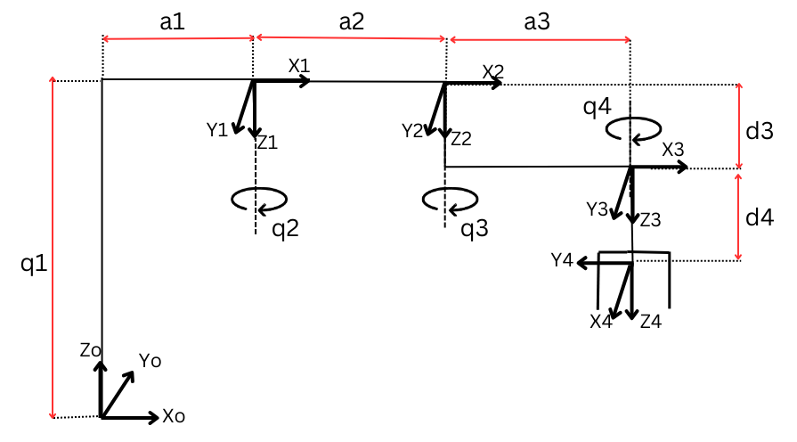
4) CAD, Simulation & Validation
We exported the SolidWorks assembly as URDF, imported it into CoppeliaSim with the correct joint hierarchy, and controlled it with Lua scripts. We used MATLAB to compute the workspace envelope and to check the kinematics against the simulator.
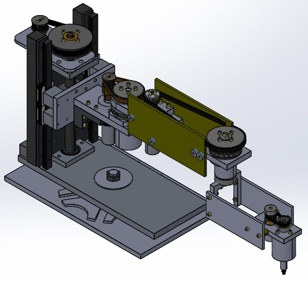
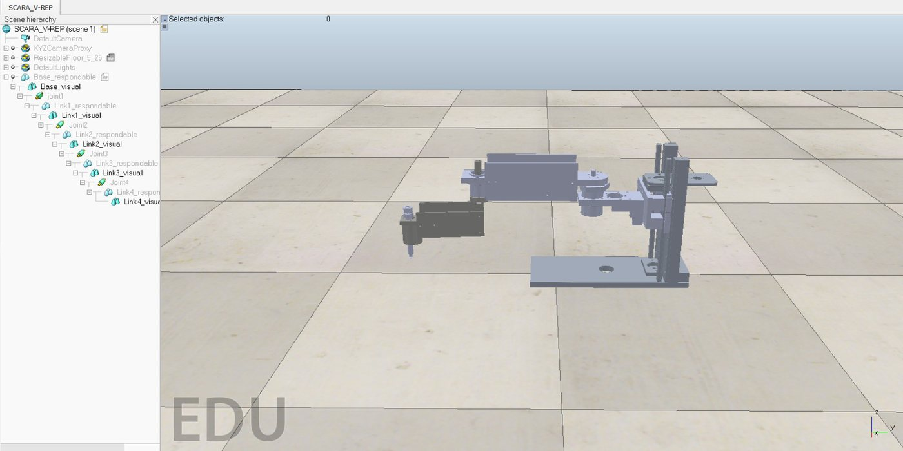
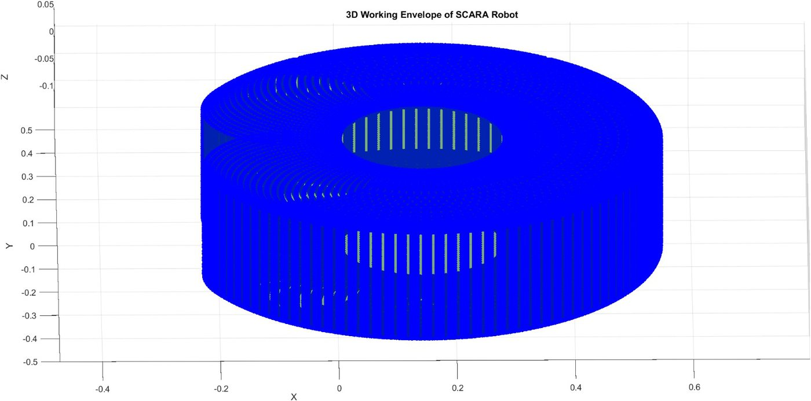
Cross-validation
With q1 = 0.18 m, q2 = 30°, q3 = 45° and q4 = 60°, the MATLAB forward kinematics gave a tool tip at (0.4016, −0.2725, 0.0390) m. CoppeliaSim reported (0.4015, −0.2733, 0.0390) m, matching to within about a millimetre.
The inverse kinematics was checked the same way: we gave MATLAB a target tool position, applied the joint angles it computed in CoppeliaSim, and compared the resulting tool position with the target.
5) Intelligent Sorting with Computer Vision
To make the virtual environment actually make decisions, we connected CoppeliaSim to a Python script through the remote API. A vision sensor in the scene captures the workspace. OpenCV (blur → Canny → contours → polygon approximation) classifies each object as a triangle, square or circle, measures its size, finds its orientation from the lowest edge, and maps pixel coordinates to workspace coordinates. These values are sent back to CoppeliaSim. The Lua script then solves the inverse kinematics and places each shape into its matching slot, correcting its orientation where needed.
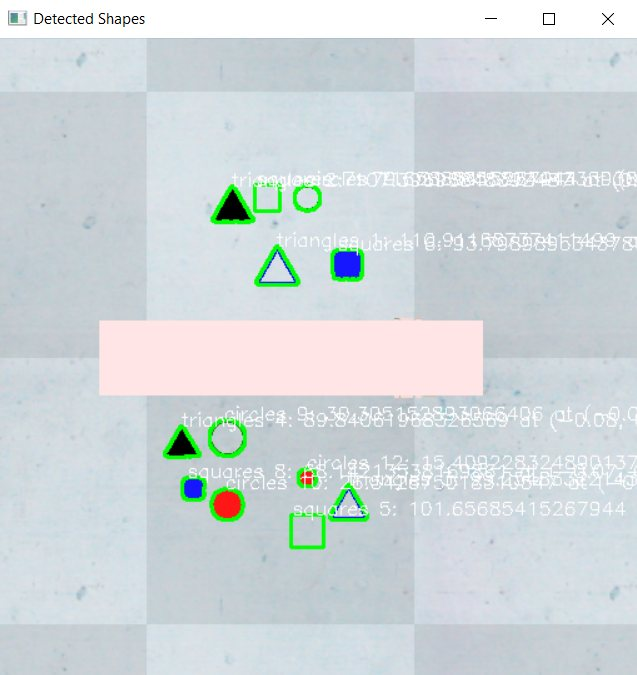
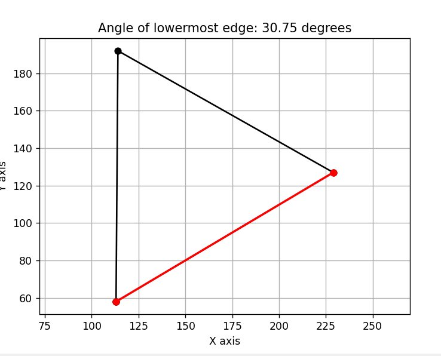
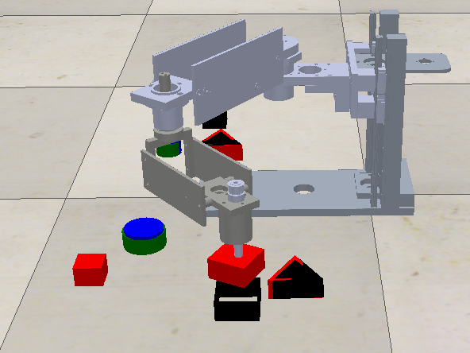
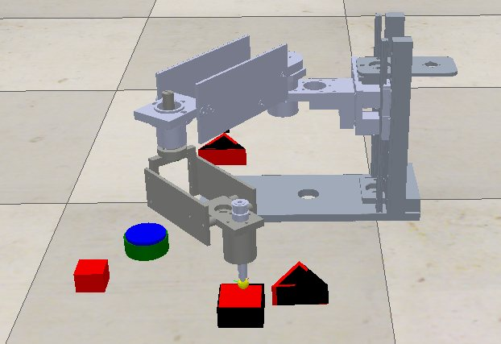
The joint angles computed in simulation are also written to the serial port (COM7) for the master controller. We checked them on a serial monitor to confirm that the values sent and received matched exactly.
6) Embedded Control & Communication
Modbus RS-485 network
- Each slave has its own unit ID. The master broadcasts every query, and only the slave whose ID matches responds.
- Message frame: address → function code → data bytes → CRC. The receiver recomputes the CRC to detect corrupted frames.
- MAX485 transceivers on the STM32 USART pins, using interrupt-driven asynchronous mode at 115200 baud. Differential signalling gives good noise immunity.
- The master holds one buffer per joint (home, lift-off, pick-up, set-down, place) plus a tool-tip buffer (suction on/off, orientation start/stop), and uses threading to send them to the slaves at the same time.
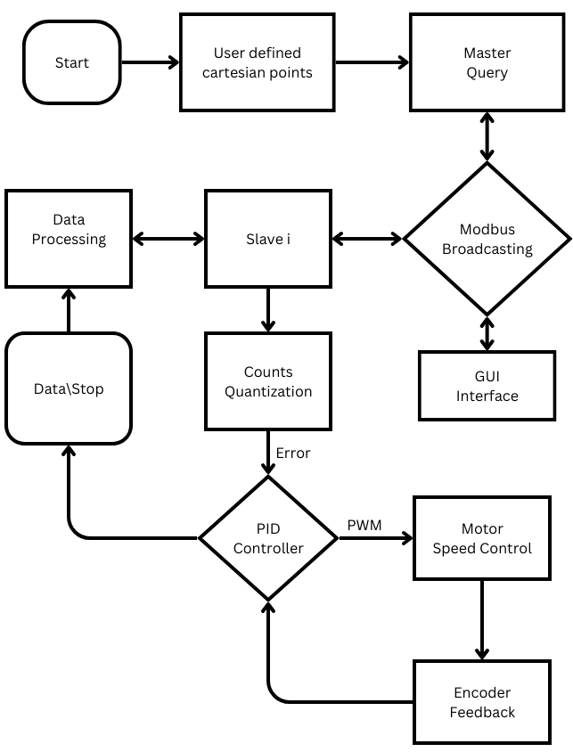
Joint control loop
- PWM: STM32 timers set up in CubeMX (prescaler, ARR, CCR) produce 10 kHz PWM, with two channels per joint for the two directions of rotation. We checked the output with a logic analyser at 20%, 50% and 70% duty cycle.
- Encoders: A timer in encoder mode (period 65535, initialised at mid-scale) counts up and down in real time.
- PID: The error between target and current counts drives the duty cycle. We tuned the gains by hand to remove jerk and to slow each joint smoothly as it approaches its target.
- State machine: Each slave steps through the via-points with switch cases (lift-off, pick-up, place, …). The tool-tip slave turns the suction pump on and off and rotates the IC before release.
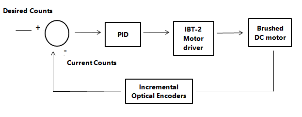
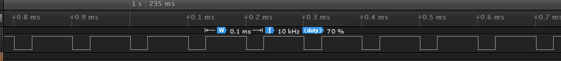
7) Prototype Deployment
After integrating the electronics with the mechanical structure, we ran the IC pick-and-place task repeatedly and reduced the positioning error by tuning the PID gains and PWM duty cycles for each motor. We then connected the virtual environment to the master controller over serial, so that a trajectory planned in CoppeliaSim was reproduced in real time by the physical robot.
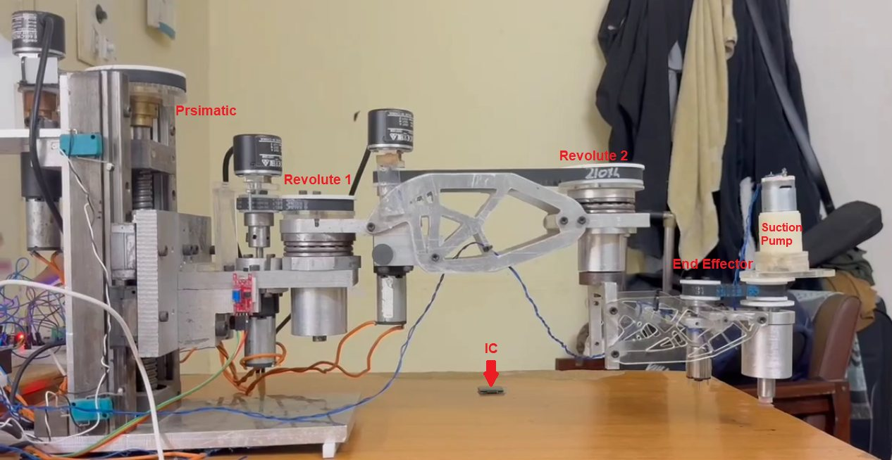
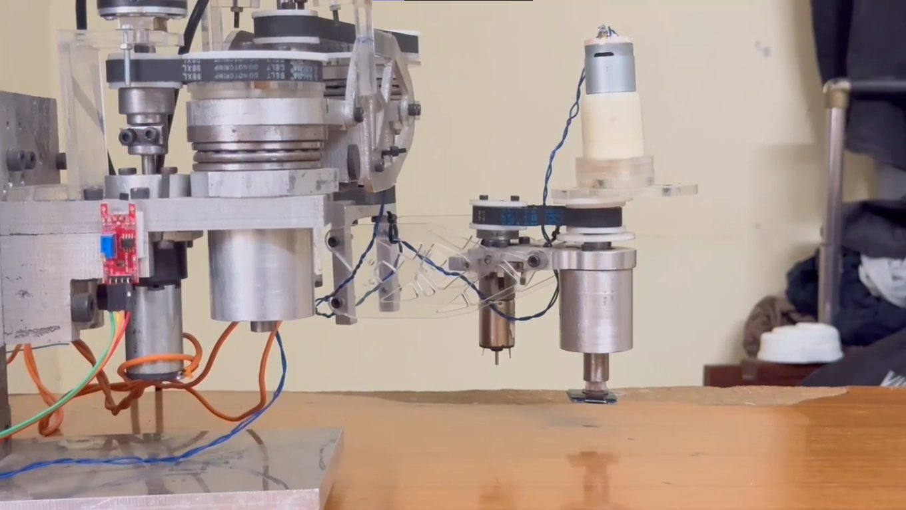
8) Outcome & Future Work
The final system met its design objectives. It provided synchronized multi-joint control over Modbus, precise PID motor control, and a vision-driven virtual environment that the real robot followed to manipulate ICs. Possible next steps include on-robot camera modules, a richer teleoperation HMI with AR and voice/NLP control, and a modular, PLC-compatible design so several SCARA units can run as slaves on one industrial network.